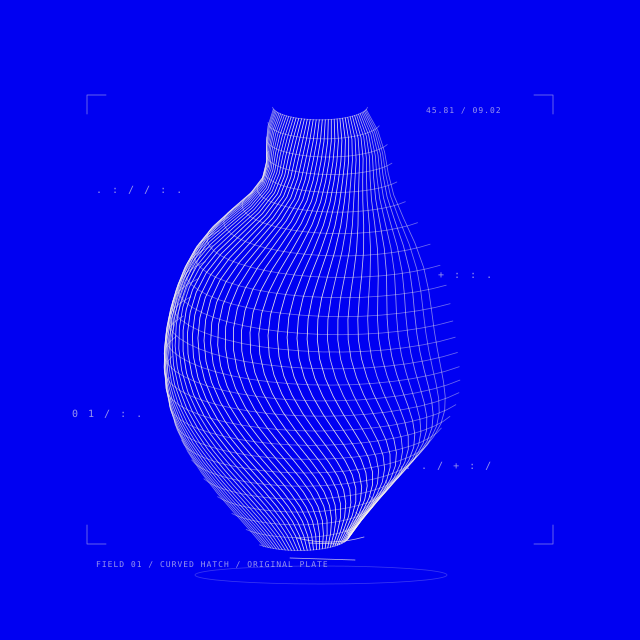

Website styles, taken apart. Each experiment starts with a one-shot LLM reading of a reference, shaped by my prompts. A visual interpretation to explore; styling notes to feed your next prompt. Something to keep when the originals change or disappear.

Cover inspiration: Neuromancer · Hermes · Styling notes